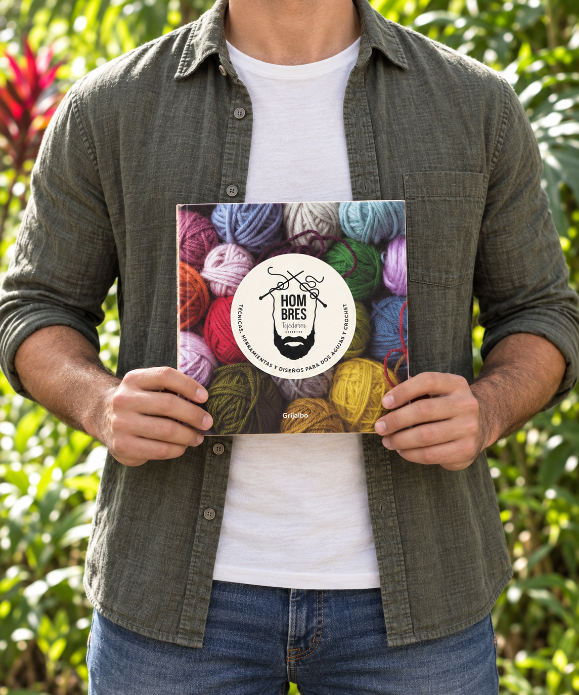
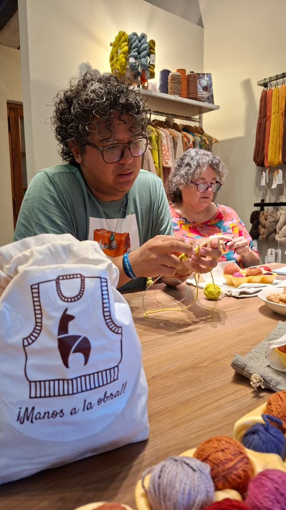
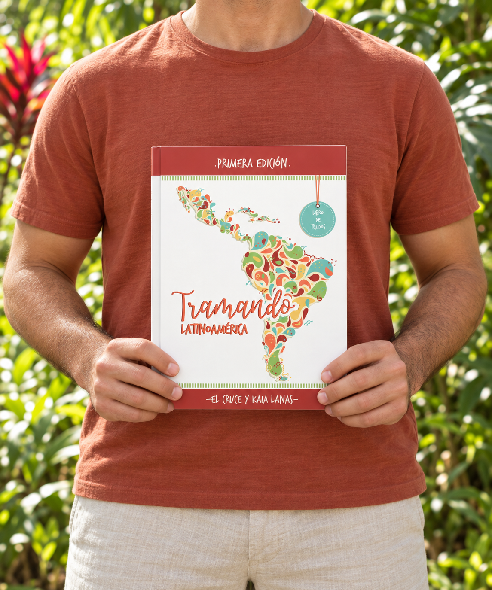

Hombres tejedores
Participação em livro
Fios, histórias e diferentes formas de viver o tricô.
Vamos transformar fios em histórias?
Crio designs com alma latino-americana e ensino você a tecer com criatividade, confiança e cor. Mais de 15 marcas parceiras e aulas em 4 países fazem parte dessa jornada.



Sou Winelvi, designer e professor de tricô. Entre fios, cores e encontros, encontrei minha forma de criar e compartilhar
Nasci em Caracas, vivi nove anos em Buenos Aires e hoje faço do Rio de Janeiro meu lar. Cada lugar deixou cores, memórias e novas maneiras de olhar para o mundo — referências que também acompanham minhas criações.
Crio xales, meias e peças com identidade latino-americana. Nas aulas, compartilho técnicas e incentivo cada beleza tropical a entender o que está tecendo, experimentar e descobrir seu próprio jeito de criar.
Ao longo dos anos trabalhei com marcas incriveis, criei pecas que contam historias e ensinei muitas pessoas a arte de tricotar.
Cada ponto tem um propósito. E a melhor parte dessa história é poder tecê-la em companhia.
| Marca | Funcao | Periodo |
|---|---|---|
| Tex Andes Lanas | Consultor tecnico, influenciador e designer | 2023 - atualmente |
| Budetex | Consultor tecnico, imagem de marca e designer | 2019 - 2023 |
| Tramando Suenos | Consultor tecnico e designer | 2023 |
Inspiração latino-americana em cada ponto. Explore meus designs e escolha a próxima história que você vai tecer.
Um espaço para aprender, experimentar e descobrir tudo o que suas mãos podem criar. Nas minhas aulas, cada dúvida faz parte do caminho e cada conquista merece ser celebrada.
Do primeiro ponto às novas técnicas, vamos explorar o tricô com agulhas circulares, o crochê e outras possibilidades da criação têxtil, com cor, criatividade e companhia.
Quero saber sobre as aulas →Experiências de quem faz parte dessa jornada.
Participar en una clase presencial de Winelvi, es una experiencia maravillosa, su generosidad a la hora de enseñar y transmitir su sabiduría, no tiene comparación con ninguna otra a la que he asistido. No se guarda nada y tiene una paciencia infinita. Además todo siempre se desarrolla en un ambiente lleno de calidez, buen humor, anécdotas compartidas, canciones y muchas risas. En sus clases no solo he aprendido cosas de tejido, sino también grandes enseñanzas de vida ( de él aprendí mucho), y sobre todo he cosechado grandes amistades. Las valoro inmensamente y procuro no perderme ninguna de ellas. Gabriela. Laboratorio de tejido.
Estoy muy contenta y entusiasmada con el curso. Te sigo hace un tiempo pero esta es la primera vez que hago un curso con vos y me encantó!! Muy buenos los videos cortos son de mucha ayuda para resolver dudas, muy buenas las explicaciones. Brindás las herramientas para entender la estructura y poder hacer lo que nuestra imaginación y creatividad permitan y eso es lo que estoy buscando últimamente, poder entender para tener la libertad de hacer. Confieso que este es mi primer suéter con agujas circulares y seguramente no será el último - Marcela . Arquitectura del Raglán
Esta es mi experiencia de como conocí a Winelvi: 1 ra. Clase: dije este tipo piensa que yo tengo el máster en arquitectura textil y me habla como que yo supiera🤦 2 da. Clase: después de tejer y destejer empecé a entender que todo lo que enseñas tiene una lógica y empecé a quererte 😍 3ra. Y última clase:te amo incondicionalmente,nunca dejes de ser Winy... Dos palabras:calidad y calidez,eso sos.. Gracias 🫂 ❤️. Andrea. Arquitectura del Raglán
Publicações das quais faço parte, entre fios, encontros e inspiração latino-americana.

Participação em livro
Fios, histórias e diferentes formas de viver o tricô.

Participação em livro
Um encontro de vozes e identidades da criação têxtil latino-americana.

Participação em revista
Uma edição da qual participei compartilhando minha criatividade e meu olhar tropical sobre o tricô.

Participação em revista
Mais um encontro entre fios e inspiração, com minha participação para seguir tecendo histórias com identidade e cor.